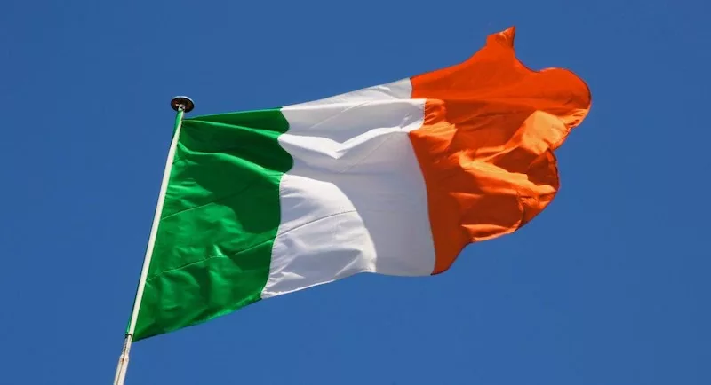
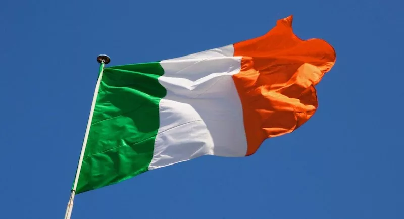
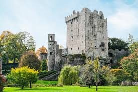
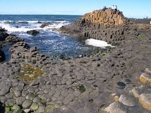
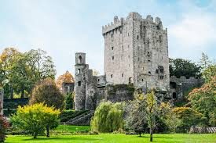
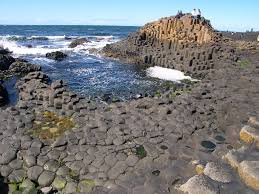
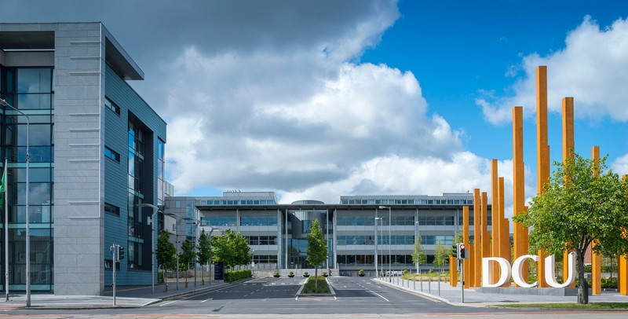
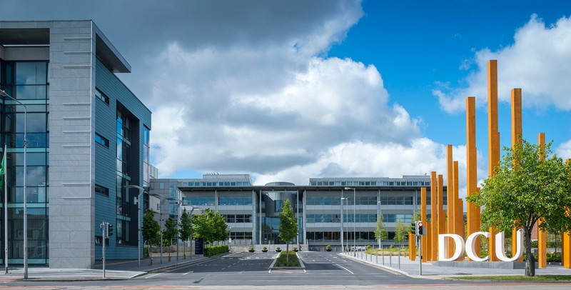

Irlanda

Culinária:🍽️
A culinária irlandesa é conhecida por sua simplicidade e sabor caseiro.
Baseada em ingredientes frescos do campo e do mar, ela reflete a tradição e o estilo de vida rural do país.
Entre os pratos mais tradicionais está o Irish Stew, um ensopado de carne, batatas e legumes que aquece nos dias frios.
Outro destaque é o Colcannon, um purê de batatas com repolho ou couve, e o Boxty, uma panqueca de batata típica do café da manhã.
O famoso Soda Bread, feito com bicarbonato de sódio, é presença constante nas mesas irlandesas.
Nos litorais, o Fish and Chips é muito apreciado, enquanto nas sobremesas se destacam o Apple Crumble e o Bread Pudding, que trazem o aconchego das receitas caseiras.
A Irlanda também é reconhecida mundialmente por suas bebidas, como a cerveja Guinness e o uísque Jameson, símbolos da cultura e hospitalidade do povo irlandês.
Idioma:🧏♀️
Inglês: É o idioma mais falado no dia a dia, usado nas escolas, no trabalho e na mídia.
Irlandês (gaélico irlandês ou Gaeilge): É a língua tradicional e nativa da Irlanda.
Embora nem todos os irlandeses a falem fluentemente, ela é ensinada nas escolas e usada em algumas regiões chamadas Gaeltacht,
onde o irlandês é o principal idioma.
 

Cultura:🎭
A cultura da Irlanda é marcada por tradições antigas, alegria e um forte senso de identidade nacional.
A música e a dança são partes muito importantes da vida dos irlandeses, com instrumentos típicos como a gaita de foles, o violino e o bodhrán, além das danças tradicionais conhecidas como Irish stepdance.
O folclore irlandês é repleto de lendas e mitos sobre fadas, duendes (leprechauns) e heróis celtas, que fazem parte da imaginação popular há séculos.
A língua gaélica irlandesa, embora menos falada hoje, continua sendo um símbolo importante da cultura e é ensinada nas escolas.
A literatura também tem grande destaque, com autores mundialmente reconhecidos como James Joyce, Oscar Wilde e Samuel Beckett, que ajudaram a tornar a Irlanda um dos países mais respeitados nesse campo.
Além disso, os pubs são locais tradicionais de encontro, onde as pessoas se reúnem para conversar, ouvir música e contar histórias.
Entre as comemorações mais conhecidas está o Dia de São Patrício, celebrado com desfiles, roupas verdes e muita música, simbolizando o orgulho e a alegria do povo irlandês.
Pontos turísticos:🚩
A Irlanda é um país repleto de paisagens naturais, castelos e cultura.
Em Dublin, destacam-se a Trinity College, o bairro Temple Bar e a Guinness Storehouse.
No oeste, estão as famosas Cliffs of Moher, a cidade de Galway e o Parque Nacional de Connemara.
No sul, o Ring of Kerry, o Castelo de Blarney e a cidade de Cork são grandes atrações.
Já no norte, encontram-se a Giant’s Causeway e a cidade de Belfast.
Outros lugares importantes são Glendalough e o Rock of Cashel, que mostram a beleza e a história do país.
 



Intercâmbio:🧳
Por que escolher a Irlanda?
Educação de excelência: as escolas e universidades irlandesas são reconhecidas mundialmente pela qualidade de ensino.
Povo acolhedor: os irlandeses são simpáticos e receptivos — você se sentirá em casa desde o primeiro dia.
Destino seguro: a Irlanda é um dos países mais seguros e tranquilos da Europa.
Fácil para trabalhar: o país permite que estudantes internacionais trabalhem durante o intercâmbio,
garantindo experiência profissional e renda extra.
Paisagens de tirar o fôlego: falésias, castelos medievais e campos verdes, perfeitos para quem ama natureza e história.
 

Tipos de Intercâmbio:🗺
Curso de Inglês: ideal para quem quer aprimorar o idioma com professores nativos.
High School: para estudantes do ensino médio que desejam viver o dia a dia em uma escola irlandesa.
Universitário e Pós-Graduação: estude em instituições renomadas e amplie suas chances no mercado global.
Work & Study: estude inglês e trabalhe meio período — perfeito para quem quer unir aprendizado e experiência internacional.
Hospedagem e suporte:🏨
Você pode escolher entre famílias anfitriãs, residências estudantis ou apartamentos compartilhados.
Nossa equipe local oferece suporte completo, desde a chegada no aeroporto até a adaptação na nova rotina.
O que está incluso no pacote:
✔️ Matrícula e curso
✔️ Acomodação e traslado
✔️ Aulas de inglês com professores certificados
✔️ Acompanhamento e suporte 24h
✔️ Orientação sobre trabalho, documentos e cultura local
Visto para Intercâmbio na Irlanda:📄
-Intercâmbio de até 90 dias (3 meses)
Se o seu curso tiver menos de 90 dias, não é necessário solicitar visto antecipadamente.
Você entra na Irlanda como turista e apresenta alguns documentos ao chegar no aeroporto:
*Carta de aceitação da escola (confirmando seu curso);
*Comprovante de hospedagem;
*Passagem de volta para o Brasil;
*Comprovante financeiro (valores suficientes para o período da estadia);
*Seguro-saúde internacional válido para todo o período.
-Intercâmbio acima de 90 dias (Work & Study)
Se o seu curso for de 25 semanas ou mais, você vai estudar e também poderá trabalhar legalmente
(até 20 horas semanais durante o curso e 40 horas nas férias).
Nesse caso, o processo é diferente:
Você viaja sem visto prévio, mas solicita o visto de estudante (Stamp 2) já na Irlanda.
Ao chegar, você agenda um atendimento na imigração (GNIB/IRP).
Será necessário apresentar:
*Passaporte válido;
*Carta da escola (confirmando matrícula e carga horária mínima de 15h/semana);
*Comprovante de endereço na Irlanda;
*Seguro-saúde internacional;
*Comprovante financeiro (mínimo de €4.500, conforme exigência atual);
*Pagamento da taxa do visto (cerca de €300).
*Após a aprovação, você recebe o cartão de residência estudantil (IRP Card),
que permite estudar e trabalhar durante o período autorizado.